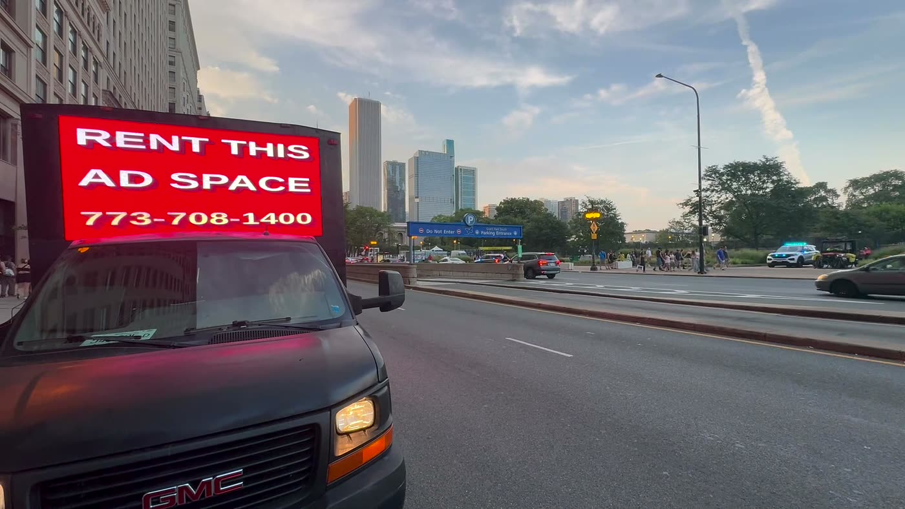

AOTC guide · Media planning & DOOH
What's driving DOOH growth in 2026.
Digital out-of-home has outgrown the rest of outdoor advertising for years. The numbers behind it, the five forces pushing it, and what they mean for a brand deciding where its next dollar goes.
The short answer
DOOH is growing because it's become easier to buy, easier to measure and harder to ignore. The OAAA reported that U.S. out-of-home revenue reached a record $9.46 billion in 2025, up 3.6%, with digital at 36.3% of the total and growing 10.5%. The drivers: programmatic buying, better audience data, privacy changes that favor media without cookies, screens that change message by place and hour, and outdoor ads that get filmed and shared.
- Key takeaways
- The numbers
- Five forces behind the growth
- Where the growth shows up
- What it means for advertisers
- Where AOTC fits
- Questions
Key takeaways
- U.S. out-of-home revenue hit a record $9.46 billion in 2025, per the OAAA; digital was 36.3% of it and grew 10.5%.
- Programmatic DOOH lets buyers add screens from the same tools they use for digital media.
- Audience and location data make DOOH plannable and measurable like other channels.
- Cookie loss and ad fatigue push budgets toward media that doesn't depend on tracking a person online.
- Mobile LED is DOOH that moves: it goes where the audience is instead of waiting for it.

The numbers
According to the Out of Home Advertising Association of America (OAAA), U.S. out-of-home advertising revenue reached a record $9.46 billion in 2025, up 3.6% from the year before and extending a long run of quarterly growth. Digital out-of-home made up 36.3% of that total and grew 10.5%, roughly three times the pace of the market as a whole.
In other words, outdoor isn't just holding on in a digital-first world. Its digital half is where the growth is.
Five forces behind the growth
1. Buying got easier
Programmatic DOOH lets buyers add screens through the same platforms they use for display, video and CTV, with flexible budgets and short flights. That brings outdoor into plans that used to be digital-only.
2. Measurement caught up
Audience data, mobile location panels and response tools such as QR codes make DOOH plannable and readable the way other channels are. Buyers can compare it with the rest of the plan instead of treating it as a leap of faith.
3. Privacy changed the math
As third-party cookies fade and tracking gets harder, media that reaches people in a place, without following them online, looks more attractive. DOOH doesn't need anyone's browsing history to work.
4. Screens became flexible
A digital screen can show breakfast in the morning and the late-night menu after 10, change by neighborhood, or count down to an opening. Messages fit the moment instead of running unchanged for a month.
5. Outdoor feeds social
Big, unexpected screens get filmed. A clever placement can travel far beyond the street it ran on, which turns a local buy into content.
Where the growth shows up
| Format | What's new |
|---|---|
| Digital billboards | Short flights and programmatic access instead of four-week contracts |
| Place-based screens | Gyms, bars, stores and offices sold by audience and venue type |
| Retail screens | In-store screens tied to retail media and sales data |
| Mobile LED billboards | Screens that drive to the audience, by hour and neighborhood |
What it means for advertisers
- DOOH belongs in the media plan, not in a separate "brand" bucket. Plan it with the same audiences and goals as digital.
- Short flights are normal now. You can buy a weekend, a game day or a single evening.
- Measure it like everything else. A response code per channel and a comparison against a baseline.
- Expect competition for the best moments. Big event weeks fill early; plan ahead.
Where AOTC fits
AOTC runs DOOH that moves: an LED billboard truck with two full-size side screens, a rear screen and a front screen. Standard truck bookings are rotational, with no competing brand in your rotation, and every booking comes with Golden Ticket access to watch the route live. For the playbook, see mobile LED DOOH campaigns for 2026 growth and the local DOOH media planning guide.
Questions
Quick answers.
01What is DOOH?
Digital out-of-home: screens in public places, such as digital billboards, transit and airport screens, screens in gyms, bars and stores, and mobile LED billboard trucks. Unlike printed outdoor ads, the message can change by hour, place or audience.
02How big is DOOH in the U.S.?
The OAAA reported that digital made up 36.3% of the $9.46 billion U.S. out-of-home market in 2025, which puts digital at roughly $3.4 billion, and that it grew 10.5% year over year.
03Is mobile LED advertising part of DOOH?
Yes. A mobile LED billboard truck is a digital out-of-home screen on wheels. It shares DOOH's strengths, such as motion and message changes by daypart, and adds the ability to drive to the audience.
Keep reading
More guides.
Mobile LED DOOH campaigns for 2026 growth
How brands use mobile LED DOOH to grow in 2026: five campaign types, how long each runs, what to measure, and how to scale to more neighborhoods and cities.
Read the guide → Media planning & DOOHLocal DOOH media planning guide for 2026
Plan a local digital out-of-home campaign in six steps: trade area, formats, budget, flighting by daypart, creative for screens and a measurement plan.
Read the guide → TrendsMobile billboard trends for 2026 and 2027
The trends reshaping mobile billboard and DOOH advertising: moment-based buying, screens built for social, measurement buyers trust and live route rooms.
Read the guide →Put your brand on the street.
Tell us the city and the dates. We'll plan the route, design the screens and send a quote, usually the same day.